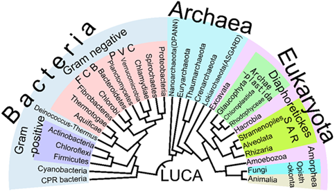
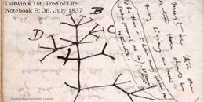

Análisis Filogenéticos
Introducción a la Filogenética
La filogenética es una rama de la biología evolutiva que estudia las relaciones de parentesco entre organismos, reconstruyendo su historia evolutiva mediante características homólogas: morfológicas, anatómicas, moleculares o genéticas. Una filogenia es una hipótesis sobre cómo se relacionan diferentes especies o linajes, derivada del análisis comparativo de datos.
Conceptos básicos
Filogenia
Representa la relación de parentesco evolutivo entre especies. Describe cómo los linajes actuales descienden de ancestros comunes y permite identificar patrones de divergencia.
Filogenética
Conjunto de métodos, teorías y herramientas destinados a inferir relaciones evolutivas.
Incluye:
- Recogida de datos (morfología, secuencias, fósiles)
- Alineamiento y análisis comparativo
- Modelado evolutivo
- Inferencia de árboles
- Validación estadística

Last Universal Common Ancestor
Aportaciones históricas
Charles Darwin
Charles Darwin fue un naturalista británico del siglo XIX cuyas observaciones durante el viaje del Beagle le llevaron a formular la teoría de la evolución por selección natural. Su obra El origen de las especies (1859) revolucionó la biología al explicar cómo las especies cambian a lo largo del tiempo. Su trabajo sentó las bases de la biología evolutiva moderna.

Charles Darwin
En El origen de las especies (1859) estableció los pilares conceptuales:
- Descendencia con modificación
- Selección natural
- El concepto de "árbol de la vida"

El Origen de la Vida

El Árbol de la Vida. Charles Darwin. Primer boceto.
Selección Natural
Ernst Haeckel
Ernst Haeckel fue un biólogo, naturalista y filósofo alemán del siglo XIX, conocido por popularizar el término ecología y por sus detalladas ilustraciones biológicas. Propuso la famosa pero hoy superada ley biogenética (“la ontogenia recapitula la filogenia”) y elaboró algunos de los primeros árboles evolutivos basados en similitudes morfológicas. Su trabajo contribuyó enormemente a difundir y visualizar las ideas evolutivas tras Darwin.
Ernst Haeckel
- Introdujo el término filogenia
- Dibujó los primeros árboles evolutivos basados en similitudes morfológicas
- Propuso clasificaciones con base evolutiva

Árbol Evolutivo. Ernst Haeckel.
Premisas evolutivas fundamentales
Según el material original, la evolución se sustenta en cinco premisas:
- Los organismos proceden de organismos similares.
- La mayoría de los descendientes no sobreviven para reproducirse.
- Las poblaciones presentan variaciones heredables.
- La interacción entre variaciones y ambiente determina la supervivencia.
- La acumulación de diferencias puede originar nuevas especies.
Importancia de la filogenética en biología evolutiva y sistemática
Comprender la evolución
Permite reconstruir cómo se originaron y diversificaron los linajes actuales.
Filogenia vs Sistemática
Filogenia: La filogenia, por otro lado, se enfoca en la reconstrucción de las relaciones evolutivas entre los organismos. Utilizando datos morfológicos, moleculares y otros tipos de datos, los filogenetistas construyen árboles filogenéticos que representan las hipótesis sobre cómo los diferentes grupos de organismos están relacionados entre sí a nivel evolutivo. Estos árboles filogenéticos son representaciones gráficas que muestran patrones de ascendencia común y divergencia evolutiva.
Sistemática: La sistemática es la disciplina que se ocupa de clasificar los organismos y organizarlos en categorías taxonómicas, como especies, géneros, familias, órdenes, etc. La sistemática abarca la descripción, nomenclatura y clasificación de los organismos con el objetivo de proporcionar un marco ordenado y comprensible para la diversidad biológica. Los taxonomistas y sistemáticos trabajan para identificar similitudes y diferencias entre los organismos y para organizarlos en grupos jerárquicos.
La sistemática moderna usa las filogenias para:
- Organizar especies
- Establecer categorías taxonómicas coherentes
- Identificar agrupaciones naturales basadas en ascendencia
Aplicaciones
- Evaluación de hipótesis evolutivas
- Conservación, identificando unidades evolutivamente relevantes
- Investigación molecular
- Identificación de homología vs. convergencia
Tipos de Datos Filogenéticos
El tipo de datos empleado influye directamente en la calidad de la inferencia filogenética. La inferencia se refiera al conjunto de métodos que permiten reconstruir las relaciones evolutivas entre organismos (o genes) a partir de datos observables, como secuencias de ADN, proteínas, caracteres morfológicos o datos fósiles. Su objetivo es estimar el árbol filogenético que mejor explica cómo se han diversificado las especies a lo largo del tiempo.
Datos morfológicos
Los datos morfológicos son las características observables de los organismos —como forma, estructura y rasgos anatómicos— usadas para reconstruir sus relaciones evolutivas.
Características externas visibles: - Forma y tamaño corporal - Anatomía superficial - Elementos articulados o estructuras óseas
Ventajas: - Útiles en fósiles y especies no secuenciadas. Limitaciones: - Susceptibilidad a convergencia evolutiva.
Datos anatómicos
Los datos anatómicos son rasgos estructurales internos de los organismos —como órganos, tejidos y sistemas corporales— empleados para inferir sus relaciones evolutivas.
Características internas:
- Estructura de órganos
- Organización tisular
- Sistemas corporales
Permiten una clasificación más conservadora.
Datos bioquímicos
Los datos bioquímicos son medidas y perfiles de actividad metabólica —como enzimas, metabolitos o rutas químicas— que permiten comparar organismos y deducir sus relaciones evolutivas.
Incluyen: - Perfiles metabolómicos - Composición química - Firmas proteicas.
Datos moleculares
Son los que incluyen ADN, ARN y proteínas, que reflejan directamente la historia heredada del genoma.
Ventajas: - Alta resolución - Modelización matemático-estadística robusta - Comparabilidad universal
Registro fósil
Los datos del registro fósil son evidencias preservadas de organismos antiguos —como huesos, impresiones o huellas— que permiten datar linajes y reconstruir la historia evolutiva.
Proporciona: - Especies extintas - Formas transicionales - Calibración temporal del árbol evolutivo
Datos de comportamiento
Los datos de comportamiento son patrones de acción observables —como conductas reproductivas, sociales o de alimentación— utilizados para comparar especies e inferir sus relaciones evolutivas.
Patrones conductuales hereditarios: - Vocalizaciones - Rituales reproductivos - Estrategias de caza
Datos genéticos de poblaciones
Los datos genéticos de poblaciones son variaciones heredables —como frecuencias alélicas, haplotipos o niveles de heterocigosidad— que permiten comparar poblaciones y deducir cómo han divergido evolutivamente.
Describen variación intraespecífica: - SNPs - Haplotipos - Estructura poblacional
Bases de datos filogenéticas
Incluyen: - GenBank - ENA - DDBJ - TreeBASE - Open Tree of Life
Análisis de Datos Filogenéticos
El análisis de datos filogenéticos es el proceso mediante el cual se reconstruyen las relaciones evolutivas entre organismos o genes utilizando información procedente de diversas fuentes, como secuencias moleculares, caracteres morfológicos, datos fósiles o comportamentales. Su objetivo principal es estimar el árbol filogenético que mejor explica la historia evolutiva de los linajes comparados.
El procedimiento general suele incluir los siguientes pasos:
Selección y preparación de los datos.
Se recopilan y depuran los datos relevantes, como secuencias de ADN/ARN, proteínas, matrices de caracteres morfológicos o dataciones fósiles. En el caso de datos moleculares, se realiza un alineamiento múltiple para identificar posiciones homólogas.
Elección del modelo evolutivo.
Se escoge un modelo matemático que describa las tasas y patrones de cambio evolutivo de los caracteres analizados.
Modelos evolutivos
Los modelos evolutivos son representaciones matemáticas que describen cómo cambian los caracteres a lo largo del tiempo, especialmente las secuencias de ADN, ARN o proteínas.
Permiten estimar la probabilidad de que una posición de la secuencia sufra sustituciones, inserciones, deleciones u otros cambios, y son indispensables para calcular qué árbol filogenético es más probable dado un conjunto de datos.
- JC69 (Jukes–Cantor): todos los cambios igual de probables.
- K80 (Kimura 2-parameter): transición ≠ transversión.
- GTR: modelo general con diferentes tasas para cada tipo de sustitución.
- Extensiones con gamma (Γ) para variación entre sitios o I para sitios invariantes.
Aplicación del método de inferencia filogenética.
A partir de los datos y el modelo seleccionado, se construyen árboles filogenéticos mediante métodos como máxima verosimilitud, inferencias bayesianas, parcimonia o métodos de distancias.
Métodos de inferencia
El método de inferencia es una estrategia matemática o estadística que permite deducir el árbol evolutivo más plausible a partir de los datos disponibles.
- Parcimonia. Busca el árbol que requiere el menor número posible de cambios evolutivos. Asume que la evolución tiende a ser “económica”. Es simple y útil para datos morfológicos, pero puede fallar con tasas de evolución desiguales.
- Métodos de distancias. Transforman los datos (p. ej., secuencias) en una matriz de distancias y construyen el árbol que mejor reproduce esas distancias. Ejemplos: UPGMA, Neighbor-Joining (NJ). Son rápidos, pero simplifican la evolución al convertirla en distancias globales.
- Máxima Verosimilitud. Evalúa qué árbol tiene mayor probabilidad de generar los datos observados según un modelo evolutivo. Es muy preciso y estadísticamente sólido, aunque computacionalmente exigente.
- Inferencia Bayesiana. Calcula la probabilidad de un árbol dado los datos, combinando el modelo evolutivo con información previa (priors). Utiliza cadenas MCMC para explorar árboles. Produce valores de soporte muy interpretables (probabilidades posteriores).
- Métodos Coalescentes (species tree methods). Modelan la historia de poblaciones y genes simultáneamente, teniendo en cuenta eventos como sorting incompleto de linajes. Útiles para filogenómica y árboles de especies.
Evaluación de la robustez del árbol.
Se estiman métricas de confianza, como bootstrap, valores de probabilidad posterior u otros índices, para determinar la fiabilidad de las relaciones inferidas.
Métricas de confianza
Una métrica de confianza es un indicador estadístico que cuantifica la fiabilidad de las ramas de un árbol evolutivo.
- Bootstrap: Genera múltiples réplicas de los datos mediante remuestreo y calcula cuántas veces aparece cada rama en los árboles resultantes. Indica la estabilidad de cada clado; valores altos (≥70%) suelen interpretarse como soporte fuerte.
- Probabilidades posteriores (Bayesian Posterior Probabilities): En inferencia bayesiana, es la probabilidad de que un clado sea correcto dado los datos y el modelo. Valores cercanos a 1 indican soporte muy alto, aunque tienden a ser más optimistas que el bootstrap.
- Valores de verosimilitud aproximada (aLRT / SH-aLRT / aBayes): Pruebas rápidas basadas en verosimilitud para medir si una rama está estadísticamente respaldada frente a alternativas. SH-aLRT y aBayes suelen dar estimaciones más estables y sensibles que el bootstrap con menos coste computacional.
- Índice de Bremer (Decay Index) Usado en parsimonia. Mide cuántos pasos extra necesita un árbol alternativo para colapsar un clado. Valores mayores indican clados más robustos.
Interpretación de los resultados.
El árbol obtenido se analiza para comprender la historia evolutiva de los organismos estudiados, detectar patrones de diversificación, identificar linajes hermanos o estimar tiempos de divergencia.